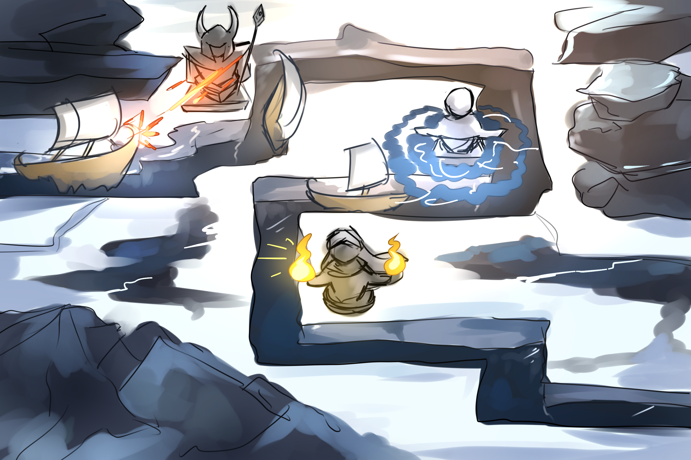
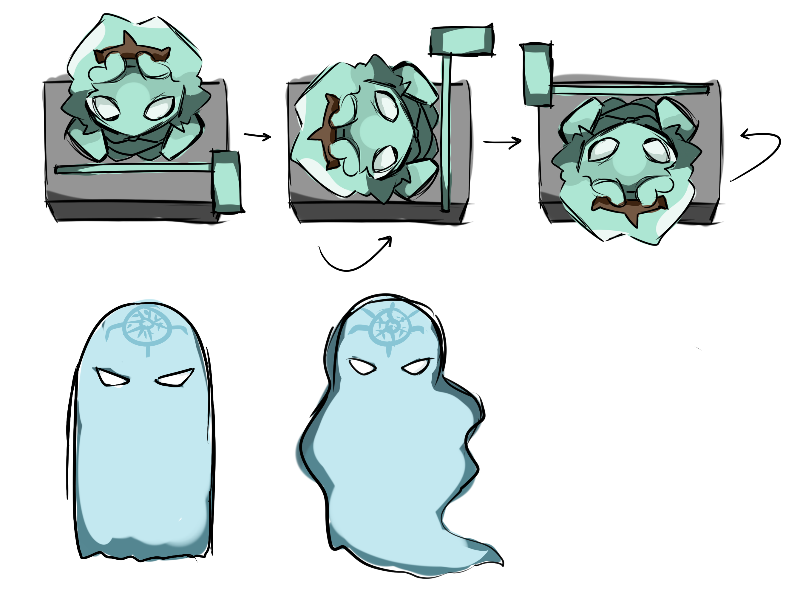
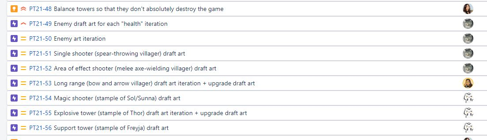

Studio-wide & Project Tower Meetings
Whew, my final semester with WolverineSoft Studio! It's been a long run, but I'm ready to make this final project the absolute best that I can. Let's get right into it!
Over the past 2 weeks, I've run 3 studio-wide meetings. 10/3, 10/10, and 10/17. Each of these meetings typically lasts for an average of 2 hours - the usual. At these meetings, I typically spend the first 20-30 minutes at the front of the room facilitating peer playtesting and making studio-wide announcements. Afterwards, Project Bloom breaks off into department meetings (which I do not attend). While this happens, I speak with Project Tower members for an indefinite amount of time.
Although I'm unable to take super great notes while talking, I do typically prepare a quick agenda before these Project Tower meetings. An example of one such agenda can be found here.
Server Maintenance, Communications, & Logistics
As per usual, I've also spent quite a bit of time this past sprint setting things up. This includes the Jira, Confluence, and Discord server. I've set up Carl-bot to automate studio meeting reminder announcements; I've set up Discord server roles, both independently and on-request (including OS roles); I've set up the schema/workflows for our Jira; I've begun revisiting old plugins for the Confluence; and so on. I've also had 2 hour-long calls, one with a member of the studio and one with two students outside of the studio, discussing potential points of improvement.
One point of discussion involved the creation of a "Coordinator" role. For context, a coordinator would be responsible for creating Jira tasks, driving progress by scheduling meetings with their departments, and so on. Although I've been making a considerable effort to avoid clearly defining leadership for this project (I have several reasons for this, but a large one is that I feel it diminishes other members' sense of ownership and responsibility), it seems as though a couple members have unofficially (and enthusiatically) taken on this sort of role without being asked to. As a result, I've silently entrusted these members with the "coordinator" role. I've found that it helps significantly with productivity, and as these soft organizational positions were introduced quietly, I don't believe it's had an impact on other members' ownership over the project.
Over the past sprint, I've also assisted in coordinating two and attended one playtesting session. The first was with Jordan Ajlouni, a long time mentor to the studio; the second was with Matt Rader, an alumni who worked on several of the studio's earliest projects.
Art
I've done quite a bit of management over the artists of Project Tower this sprint. I'm really, really happy with their work and dedication to the project (I actually find that their level of commitment is unprecedented in the studio). In order to guide them along the project, I've created key assets and a style guide, and have met with them multiple times both in groups and individually to figure out certain details of the department. Some of these sketches can be seen below, and my correspondence with the art team in particular can be found throughout the #art channel.
 A link to the style guide I put together may be found here. One large decision made this sprint was, as I mentioned, establishing a concrete art style for the game. We ultimately decided on something top-down and very rounded/cartoony for the sake of keeping things cohesive between our artists. In order to assist the artists in selecting an art style, I spent a bit of time in Unity roughly importing their assets a few times. An example demo video I created (with an earlier art style) can be seen before.
Design and Production
Although production has been less hectic than in previous semesters (there's less bureaucracy in relation to the flow of information), it's still very much a position that I've needed to fill. I've found that in a smaller team, design and production work have been much more closely intertwined. As a result, I've done quite a bit of design work in order to drive progress through production.
Every sprint, I create a Confluence document with top priorities for iteration. While in the past the studio has followed more of a Waterfall development cycle, I'm attempting to be slightly more Agile in this project. Instead of strictly defining every detail of our end product, I instead have members analyze the game at each Sunday meeting and discuss what our next priorities should be. An example of one such page where I have outlined this information can be found here.
Regardless, in order to have a good idea of the health of the project, I did develop several goals for the project by studying Bloons TD 6 as our case study. I documented these goals (and a few details about certain towers, enemies, and maps) on this Confluence page.
Finally, I've been very active on Jira. Outside of most programming tasks and audio tasks, I create a majority of the tasks within the backlog. Similar to Winter 2021, I've found that having a centralized role responsible for creating all tasks is largely beneficial (albeit quite a bit of work). It gives me a much better idea of where the project is at, but at the same time, it's a lot of information for one person to coordinate. I'm very fortunate to have Nikhil and Crystal assist in creating programming and audio tasks.
Team-building
And finally, I've been really focusing in on team-building - something that hasn't really been a priority for the studio in the past. Although I don't count this in my hours, I organize a team lunch after every in-person studio meeting. Our turnout is honestly great - typically, around 10-15 people join - which both overwhelms restaurants and also provides members with the face-to-face time needed to really encourage investment into their team.
Additionally, and this is something that I do count in my hours, I've organized quite a few community game nights for the Project Tower team. These typically happen within Discord remotely, where members join a voice chat and play Bloons TD 6 while sharing observations (some educational, some... not as educational). Buying Bloons TD 6 for every member of the project has done absolute wonders for the project, and it's something I cannot encourage enough for future studio iterations. While I don't imagine that even a third of what members get out of playing Bloons constantly is entirely educational, the fact that members are exposing themselves to our case study game willingly and so frequently makes creating a convincing "clone" all the easier.
Conclusion
To sum it up, things are going well. Our biggest struggle this sprint has been with balance; currently, the game is so easy that virtually no playtesting is to be had. I imagine that a rebalancing of the towers/enemies (which Nikhil and I will be working on in the first few days of Pre-Alpha II) will solve this issue nicely. It's too early to make detailed observations/comments on the projects this semester, but so far, we're hitting all our milestones and getting an unprecedented amount of tasks done on time.
I'm slightly worried about the progress of Project Bloom, which is something I'll be keeping an eye on more closely this upcoming sprint. Although I'm not as directly involved in Bloom as I am in Tower, I'm still just as invested in the project's success. That's it for this entry - thank you for reading.